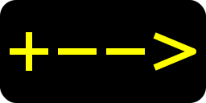
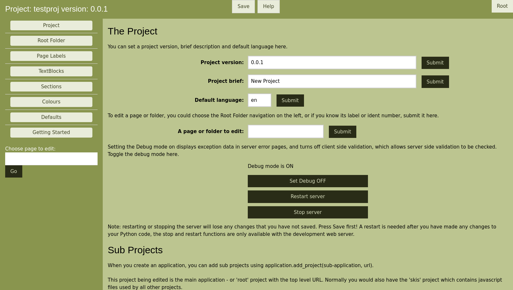

 Skipole WSGI generator.
skipole is a WSGI application generator.
skilift is an associated python package which helps the development of an application.
Typically a developer's PC would have both the skilift and the skipole Python packages installed. Skilift can be used to generate a web site, it includes a development web server and provides a web admin interface, which together with your own code and the skipole functions, enables the developer to create a wsgi application.
Once created, your application and its support files can be moved to your deployment server, which also needs a WSGI compatible web server, and the skipole package.
The deployment server does not need the skilift application.
The developer supplies appropriate python functions to receive data and populate the widget parameters.
Skipole requires python 3.6 or later. It would normally be installed with pip, usually into a virtual environment.
If you are using Debian, you may need the Python3 version of pip to obtain packages from Pypi.
apt-get install python3-pip
If you need further information on pip and virtual environments, try:https://packaging.python.org/guides/installing-using-pip-and-virtual-environments/
Then install skipole and skilift from pypi with:
python3 -m pip install skipole
python3 -m pip install skilift
The framework is used to create a project, this consists of a number of template pages and Responders that together with your own code will produce a wsgi application. Responders are objects which call your functions, which populate widget fields in a template page.
To create a new project you would normally run:
python3 -m skilift myproj /path/to/projectfiles
You should replace 'myproj' with your preferred name for a new project. A projectfiles directory will be created with your new project 'myproj' within it.
You would then run:
python3 /path/to/projectfiles/myproj.py
Then connect with a browser to localhost:8000 to view the project, and call localhost:8000/skiadmin to open an administrative site.
The main admin page.
Typically you use these skiadmin web pages to create and populate your project templates with widgets, and set up the responders to accept an incoming call and route data from the call to your own code. Your code sets data into a Python object, which populates the widget fields of a target template page which is then returned to the caller.
Examples of the widgets available can be seen at:
As well as 'template' pages, JSON pages can be created and returned to the client browser. These can be used to update certain widget fields via javascript rather than refreshing entire pages.
Multiple 'responder' types are available, to handle cookies and incoming data.
To deploy your final application on a web server of your choice, you would edit myproj.py to remove skilift and the development server, and also remove the code which adds the skiadmin project.
You would normally copy the projectfiles directory to your web server, and then the module:
/path/to/projectfiles/myproj.py
could be imported to create the WSGI application.
Deploying a web server with the application depends on your server, usually the web server has some means of importing myproj.py, and running 'application'. The link:
gives a number of examples.